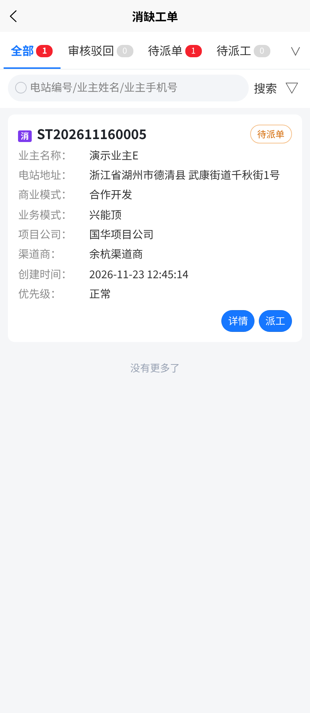

消缺工单
这个模块干什么
登记勘察或施工中发现的缺陷，由有权限的人手工派工，再由被派到的执行人在工单详情中登记处理结果并提交审核。
谁来用
具有消缺权限的岗位可以建单或派工。被派到的执行人在自己的工单详情里做消缺登记。审核员负责通过或驳回。
从哪里进入
- 现场端：「应用」→「电站开发」→「消缺工单」，或从工单中心进入被派给自己的待办。
- 电脑端：首页或「开发/交付」中的「消缺工单」。

图：现场端消缺工单在「待派单」状态只有「详情」和「派工」。
操作步骤
- 打开消缺工单，在「待派单」或「待派工」时点「派工」，指定组织和处理人。这是手工派工，不会自动分派。
- 派工后状态进入「执行中」。被派到的执行人打开工单详情，填写执行反馈，按需要上传执行图片。消缺类型、问题描述等应在建单时填写清楚。
- 执行人提交后进入审核。
消缺登记入口在被指派执行人的工单详情中，派工人不能在自己的列表上直接填写处理结果。
状态与按钮
| 状态 | 常见按钮 |
|---|---|
| 待派单、待派工 | 详情、派工。这两种状态不提供编辑表单，只派工 |
| 执行中、审核驳回 | 详情、编辑（由执行人登记） |
| 待审核 | 详情 |
| 已完成、作废、关闭 | 详情 |
没有写权限时只能查看。筛选会实际生效，只显示符合条件的单据。
独立消缺工单的驳回方式可以在审批设置中选择「驳回后退回发起人」或「驳回即关闭」。选择后者时，驳回后单据直接变为「关闭」，不再退回修改。
提交之后会发生什么
审批启用时进入待审核。通过后变为已完成。若配置为驳回即关闭，驳回后出现在「关闭」页签，行内只保留详情。
注意事项
请写清问题描述并上传问题图片，便于执行人现场处理。不要把尚未开放的「质量整改整单」理解成已经可以在本模块里办理。